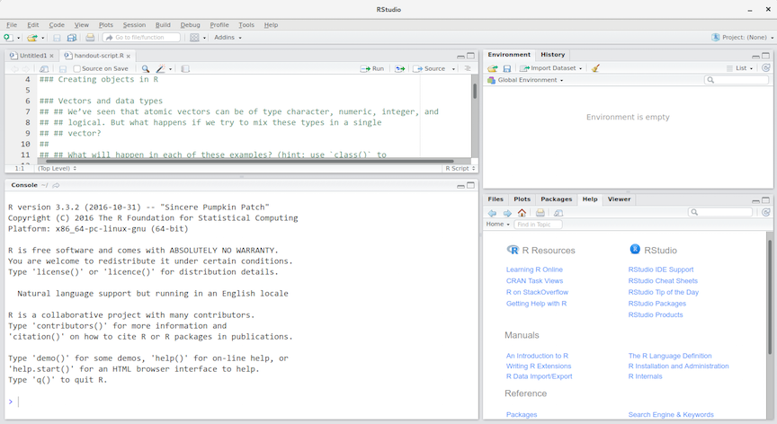

PSYC 5316: Getting Started With R and RStudio
Table of Contents
Introduction: What is R / RStudio?
The term "R" is generally used to refer to two things: (1) a statistical programming language, and (2) the software that interprets the scripts written using it. RStudio is currently a very popular way to not only write your R scripts but also to interact with the R software. To function correctly, RStudio needs R, and therefore both R and RStudio need to be installed on your computer.
Why should I learn R?
R is not point/click software..and that's a good thing!
The learning curve might be steeper than with other software, but with R, the results of your analysis does not rely on remembering a succession of pointing and clicking, but instead on a series of written commands, and that's a good thing! So, if you want to redo your analysis because you collected more data, you don't have to remember which button you clicked in which order to obtain your results, you just have to run your script again.
Working with scripts makes the steps you used in your analysis clear, and the code you write can be inspected by someone else who can give you feedback and help you to debug (i.e., spot mistakes in your code).
Working with scripts also forces you to have a deeper understanding of what you are doing, and facilitates your learning and comprehension of the methods you use.
R code is great for reproducibility
Reproducibility is when someone else (including your future self) can obtain the same results from the same dataset when using the same analysis. R integrates with other tools to generate manuscripts from your code. If you collect more data, or fix a mistake in your dataset, the figures and the statistical tests in your manuscript are updated automatically.
An increasing number of journals and funding agencies expect your analyses to be reproducible, so knowing R will give you an edge with these requirements.
R is interdisciplinary and extensible
With over 10,000 packages that can be installed to extend its capabilities, R provides a framework that allows you to combine statistical approaches from many scientific disciplines to best suit the analytical framework you need to analyze your data. For instance, R has packages for image analysis, GIS, time series, population genetics, and a lot more.
R works on data of all shapes and sizes
The skills you learn with R scale easily with the size of your dataset. Whether your dataset has hundreds or millions of lines, it won't make much difference to you.
R is designed for data analysis. It comes with special data structures and data types that make handling of missing data and statistical factors convenient.
R can connect to spreadsheets, databases, and many other data formats, on your computer or on the web.
R produces high-quality graphics
The plotting functionalities in R are endless, and allow you to adjust any aspect of your graph. This will help you to convey the message from your data most effectively.
R has a large community
Thousands of people use R daily. Many of them are willing to help you through mailing lists and websites such as stackoverflow.com. Most of your questions are simply a Google search away!
Not only is R free, but it is also open-source and cross-platform
Anyone can inspect the source code to see how R works. Because of this transparency, there is less chance for mistakes, and if you (or someone else) find some, you can report and fix bugs.
Knowing your way around RStudio
Let's start by learning about RStudio, which is an Integrated Development Environment (IDE) for working with R.
The RStudio IDE open-source product is free under the Affero General Public License (AGPL) v3. The RStudio IDE is also available with a commercial license and priority email support from RStudio, Inc.
We will be using RStudio to write code, navigate the files on our computer, inspect the variables we are going to create, and visualize the plots we will generate. RStudio can also be used for other things (e.g., version control, developing packages, writing Shiny apps) that we will not cover during the semester.

RStudio is divided into 4 "Panes":
- the Source for your scripts and documents (top-left, in the default layout)
- the R Console (bottom-left),
- your Environment/History (top-right)
- your Files/Plots/Packages/Help/Viewer (bottom-right).
The placement of these panes and their content can be customized (see menu, Tools -> Global Options -> Pane Layout). In fact, I will show you in class how I prefer to organize my workspace.
One of the advantages of using RStudio is that all the information you need to write code is available in a single window. Additionally, with many shortcuts, autocompletion, and highlighting for the major file types you use while developing in R, RStudio will make typing easier and less error-prone.
Interacting with R
The basic idea of any computer programming is that we write down instructions for the computer to follow, and then we tell the computer to follow those instructions. We write (code) instructions in R because it is a common language that both the computer and we can understand. We call the instructions commands and we tell the computer to follow the instructions by executing (also called running) those commands.
There are two main ways of interacting with R: by using the console or by using script files (plain text files that contain your code). The console pane (in RStudio, the bottom left panel) is the place where commands written in the R language can be typed and executed immediately by the computer. It is also where the results will be shown for commands that have been executed. You can type commands directly into the console and press `Enter` to execute those commands, but they will be forgotten when you close the session.
Because we want our code and workflow to be reproducible, it is better to type the commands we want in the script editor, and save the script. This way, there is a complete record of what we did, and anyone (including our future selves!) can easily replicate the results on their computer.
RStudio allows you to execute commands directly from the script editor by using the Ctrl + Enter shortcut (on Macs, Cmd + Return will work, too). The command on the current line in the script (indicated by the cursor) or all of the commands in the currently selected text will be sent to the console and executed when you press Ctrl + Enter.
Note that if the R console is ready to accept commands, the R console shows a > prompt. If it receives a command (either typed or sent from the script editor using Ctrl + Enter), R will try to execute it, and when ready, will show the results and come back with a new > prompt to wait for new
commands.
However, if R is still waiting for you to enter more data because it isn't complete yet, the console will show a + prompt. It means that you haven't finished entering a complete command. This is because you have not 'closed' a parenthesis or quotation (i.e. you don't have the same number of left-parentheses as right-parentheses, or the same number of opening and closing quotation marks). When this happens, and you thought you finished typing your command, click inside the console window and press Esc; this will cancel the incomplete command and return you to the > prompt.
Getting help
One of the most fastest ways to get help, is to use the RStudio help interface. This panel by default can be found at the lower right hand panel of RStudio. As seen in the screenshot, by typing the word "Mean", RStudio tries to also give a number of suggestions that you might be interested in. The description is then shown in the display window.

Let's suppose that you know the name of the function I want to use (e.g., barplot) but you're not sure how to use it. In this case, you can type ?barplot in the console, which will pull up the help screen inside the console.
If you can't find what you are looking for in the help screen, you always can use the rdocumentation.org website that searches through the help files across all packages available. However, in my experience, the easiest way to get R help is a generic Google search. This will often either send you to the appropriate package documentation or a helpful forum where someone else has already asked your question.
Creating objects in R
At its most simplest, R is a command-line driven calculator. So, you can always get output from R simply by typing some mathematical expression in the console:
3 + 5 12 / 7
However, to do useful and interesting things, we need to assign values to objects. To create an object, we need to give it a name followed by the assignment operator <-, and the value we want to give it:
weight_kg <- 55
As I just mentioned, <- is the assignment operator. It assigns values on the right to objects on the left. So, after executing x <- 3, the value of x is 3. The arrow can be read as "3 goes into x". For historical reasons, you can also use equal sign = for assignments, but not in every context. Because of the slight differences in syntax, it is good practice to always use `<-` for assignments.
Note: In RStudio, typing Alt + - will write the assignment operator <- in a single keystroke!
Objects can be given any name such as x, current_temperature, or subject_id. You want your object names to be explicit and not too long. They cannot start with a number (2x is not valid, but x2 is). R is case sensitive (e.g., weight_kg is different from Weight_kg). There are some names that cannot be used because they are the names of fundamental functions in R (e.g., if, else, for, see here for a complete list). In general, even if it's allowed, it's best to not use other function names (e.g., c, T, mean, data, df, weights). If in doubt, check the help screen to see if the name is already in use.
It is also recommended to use nouns for variable names, and verbs for function names. Whatever you do, it is important to be consistent in the styling of your code (where you put spaces, how you name variables, etc.). Using a consistent coding style makes your code clearer to read for your future self and your collaborators.
When assigning a value to an object, R does not print anything. You can force R to print the value by using parentheses or by typing the object name:
weight_kg <- 55 # doesn't print anything (weight_kg <- 55) # prints the value of `weight_kg` weight_kg # and so does typing the name of the object
Now that R has the object weight_kg in memory, we can do arithmetic with it. For instance, we may want to convert this weight into pounds (weight in pounds is 2.2 times the weight in kg):
2.2 * weight_kg
We can also change a variable's value by assigning it a new one:
weight_kg <- 57.5 2.2 * weight_kg
This means that assigning a value to one variable does not change the values of other variables. For example, let's store the animal's weight in pounds in a new variable, weight_lb:
weight_lb <- 2.2 * weight_kg
and then change weight_kg to 100.
weight_kg <- 100
What do you think is the current content of the object weight_lb? 126.5 or 220?